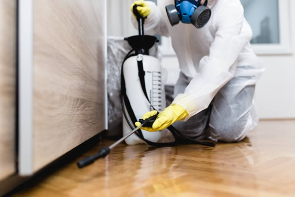
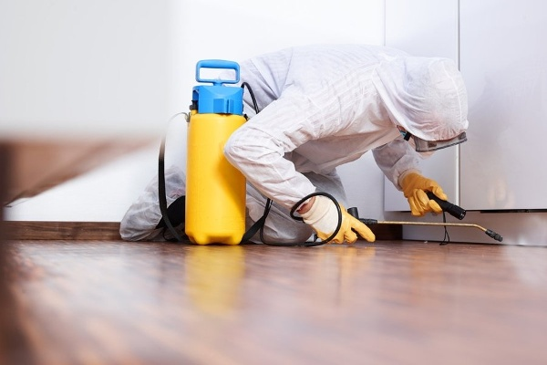

- Flies and mosquitoes
- Cockroaches
- Mire and rats
- Bees and wasps
- Termites
- Ants
- Spiders
Why You Should Choose All-Natural Pest Control In Melbourne
With all the choices out there when it comes to pest control, it can be difficult to know which route is right for you. In this article, we will discuss the benefits of all-natural pest control and why you should consider using it in your home.
Business pest control is just as crucial as residential pest prevention. So many people like to talk about keeping annoying and dangerous pests out of the residential property, but forgetting about pest prevention within your business can have a wide array of consequences. Businesses on the cutting edge have found the value of making use of organic pest control techniques.
Better For The Environment
There was a time when people put an enormous emphasis on reducing their carbon footprint without wasting any materials. Along with being the chief source of water pollution and the decline of forests and wildlife, many industries have been urged to decrease the overuse of chemicals, such as in the production of paper. By choosing organic pest management services, you are taking a step toward going green and helping the environment.

Keep Employees Safe
Organic pest control safeguards the health of everyone who works at your firm. Whether everyone pays attention and informs others that chemicals are being utilized, handling these harmful substances can still lead to harmful results. Organic pest control forbids residue from remaining on surfaces, getting into food, or other negative results. This is especially important to you and other customers.
Natural Pest Control Doesn’t Hurt Air Quality
Indoor air quality is overdue for attention because it has gained national attention due to health issues caused by pollution. If you know that you recently sprayed a room, you should be aware that the vapors will remain for some time even if the label says it will go within a certain amount of time. It doesn't require any harsh chemicals and may be used successfully in close spaces, without degrading the indoor air quality.
Won’t Damage Property
Chemicals can be dangerous if they remain on wood and other surfaces for a long time since they make the area more susceptible to stains and other damage. They might damage the surface's protective coat, making the area begin to look unsightly. Using natural pest control methods keeps any wastes and chemicals away from the home, so they're absolutely safe.
Keeps The Landscape Safe
Many business people take into account the landscape of their area to be crucial to the appearance of their businesses. If you spray dangerous insecticides around your trees, plants, flowers, and shrubs, you run the risk of weakening their health and probable death. Certain pest-detection techniques are entirely safe for all types of organic and natural substances and include other parts of your backyard.

Stop Chemical Resistance
Consider insects similar to humans in that offspring will inherit the essential biological characteristics from their parents that help them survive. If you spray chemicals on the bug and then survive, it's probable that its body will build up a resistance to that specific substance. The inheritance of this resistance in offspring will make their descendants much more difficult to eradicate. You will not have to think about this with the use of natural substances.
Pests You Can Control With Natural Remedies
Even the most straightforward foodies will encounter stumbling blocks in their living areas against pests. This article features plenty of suggestions for natural pest control remedies.
Improve Your Commercial Reputation With All Natural Pest Control
Whether your business is in or out of a fast-food restaurant, it's crucial for your business's reputation that you maintain clean and pest-free conditions. While your customers won't know that you're using green pest-management methods, they'll notice that your premises are clean and pest-free, which is good for building positive business status.
In conclusion, choosing all-natural pest control is a great way to protect your home and family from harmful chemicals. All-natural methods are safer for you and the environment, and they often work better than chemical-based pest control. If you're looking for a safe and effective way to keep your home free from pests, all-natural pest control is a great option to consider.